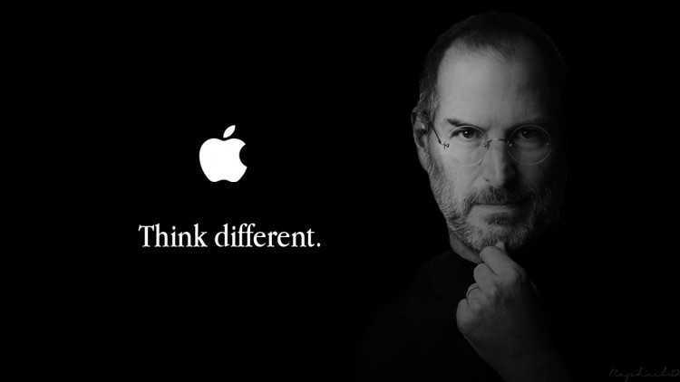
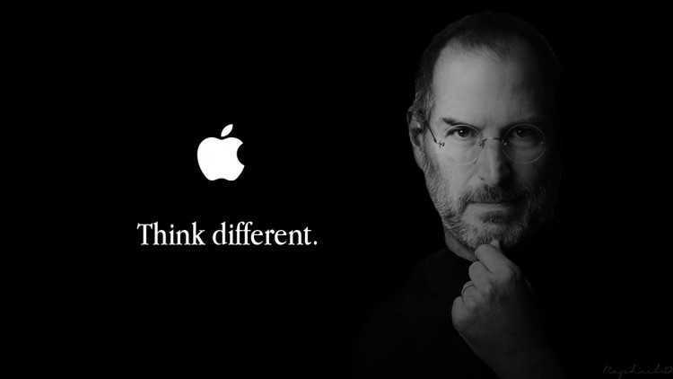

FAVORITE BRANDS
WHAT BRANDS
One of my favorite brands is Nike, well known for sportswear, footwear, and accessories. Nike is very popular and loved for a lot of reasons including quality goods, trendy styles and strong brand identity. One of the most popular catchphrases in the world is Nike’s “Just Do It” which sums up the company’s mission to inspire athletes and help them realize their full potential.
Nike has made significant investments in creating innovative technology that improve athletic performance such as the Nike Air cushioning in the Nike Air max shoes, Fly Knit and Dri-FIT textiles used in their clothes and shoes. They have a strong dedication to sustainability and innovation, and this is one of the many reasons why they stand out from the competition. Many top athletes, such as Michael Jordan, Tiger Woods, and LeBron James, have endorsed Nike products, and this has helped to strengthen the brand's image and appeal.
Apple, the tech giant has come to be associated with innovation, design, and quality, is another brand that I respect. Apple is renowned for both its ground-breaking software and services, including iTunes and the App Store, as well as its iconic products, like the iPhone, iPad, and MacBook.
Apple's success is a result of its emphasis on design and user experience. Apple devices are recognized for their user-friendly interfaces, clean, minimalistic design, and ease of use. Apple has a reputation for originality and invention, and the corporation has been a pioneer in the development of cutting-edge technology like touch ID and facial recognition.
Apple has excellent branding as well, with a straightforward yet identifiable logo that incorporates the company's name in a neat, minimalist font. The logo is frequently shown in white or silver, which projects a luxurious, high-end impression. The predominant color schemes used by Apple are white, black, and metallic, with splashes of vibrant hues like green or blue. This focus on minimalism produces a clean, contemporary appearance that is simple to recognize.
 
 

In conclusion, I would say that Nike and Apple are two of my favorite companies because of their dedication to quality, innovation, and design. Both brands have strong brand identities that are linked to quality and achievement, and their branding is straightforward, potent, and clearly distinguishable. These companies have ingrained themselves in our culture and changed the way we view sports, technology, and design.
WHAT DO I PLAN TO USE?
I really do the like the font of both my favorite brands as Nike uses Trade Gothic and Apple uses San Francisco pro on their websites, but I have decided to choose fonts that I really like for my own website. For now, I plan to use Cambria, Hoefler Text, Liberation Serif, Times, Times New Roman, serif as my font.
MY LOGO HEADER AND FONT
I went with a simple image of a mountain for my Logo header. I also chose a variance of warm colors, Giant orange(F46036), Vista blue(7F95D1), Wenge(54494B), White(FFFFFF) and Sage(C5C9A4).
.